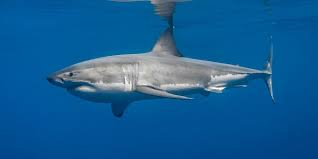
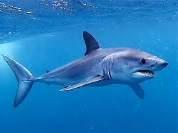
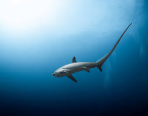
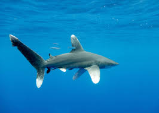

Shark Species Recognition Key
Interactive guide to identify shark species by visual characteristics
Download Shark Key Resources
Protected file accessDownload the Shark Key package and use it locally for quick reference.
Password: www.serrafins.com
Tutorial: will be added soon.

Basking Shark
Cetorhinus maximus- Size: 6-10 meters (20-33 ft)
- Color: Grey-brown body with lighter belly
- Features: Huge gill slits and wide filter-feeding mouth
- Habitat: Temperate coastal and offshore waters
- Behavior: Slow swimmer, surface-feeding plankton specialist

Blacktip Reef Shark
Carcharhinus melanopterus- Size: 1.2-1.8 meters (4-6 ft)
- Color: Pale grey to brown with white underside
- Features: Distinct black tips on dorsal and tail fins
- Habitat: Shallow coral reefs and lagoons
- Behavior: Active reef hunter, often seen near shore

Blue shark
Prionace glauca- Size: 2-3.8 meters (6.5-12.5 ft)
- Color: Deep blue upper body and white belly
- Features: Long pectoral fins and slender streamlined body
- Habitat: Open ocean in temperate and tropical waters
- Behavior: Wide-ranging pelagic migrator

Bull Shark
Carcharhinus leucas- Size: 2-3.4 meters (6.5-11 ft)
- Color: Grey back and pale underside
- Features: Stocky body and short blunt snout
- Habitat: Coastal seas, estuaries, and freshwater rivers
- Behavior: Territorial and highly adaptable

Great White Shark
Carcharodon carcharias- Size: 4-6 meters (13-20 ft)
- Color: Grey top, white belly
- Features: Triangular dorsal fin, black eyes
- Habitat: Coastal waters, temperate
- Behavior: Apex predator, solitary

Hammerhead Shark
Sphyrna mokarran- Size: 3-6 meters (10-20 ft)
- Color: Grey-brown with lighter belly
- Features: Distinctive hammer-shaped head
- Habitat: Tropical and temperate waters
- Behavior: School in large groups

Mako Shark
Isurus oxyrinchus- Size: 2-4 meters (6.5-13 ft)
- Color: Metallic blue above and white below
- Features: Pointed snout with crescent-shaped tail
- Habitat: Offshore temperate and tropical oceans
- Behavior: Extremely fast, powerful pelagic hunter

Thresher Shark
Alopias vulpinus- Size: 3-6 meters (10-20 ft)
- Color: Blue-grey or brown upper body
- Features: Very long upper tail lobe used to stun prey
- Habitat: Coastal and offshore waters
- Behavior: Hunts schooling fish with tail-whip strikes

Tiger Shark
Galeocerdo cuvier- Size: 2.4-3.3 meters (8-11 ft)
- Color: Grey-blue with vertical stripes
- Features: Blunt snout, striped markings
- Habitat: Warm coastal waters
- Behavior: Nocturnal, opportunistic feeders

Whale Shark
Rhincodon typus- Size: 9-18 meters (30-59 ft) - largest fish
- Color: Grey with white spots and stripes
- Features: Massive mouth and broad flat head
- Habitat: Warm tropical oceans
- Behavior: Gentle filter feeder on plankton

Whitetip Shark
Carcharhinus longimanus- Size: 2.5-4 meters (8-13 ft)
- Color: Bronze-brown body with pale ventral side
- Features: Rounded fins with distinct white tips
- Habitat: Open ocean, tropical and subtropical waters
- Behavior: Opportunistic pelagic predator